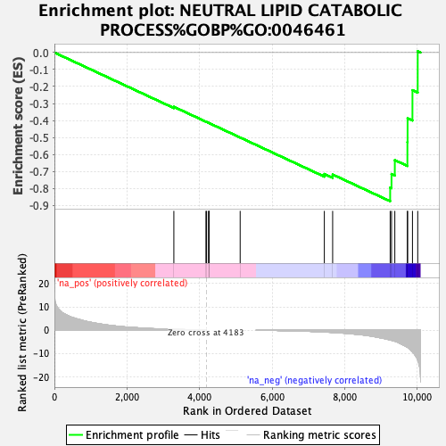
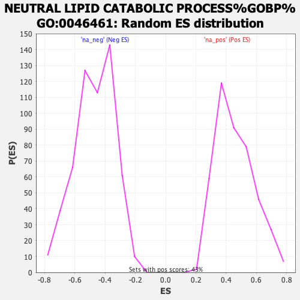

| | | Dataset | CRC_ranked_genelist.rnk |
| Phenotype | NoPhenotypeAvailable |
| Upregulated in class | na_neg |
| GeneSet | NEUTRAL LIPID CATABOLIC PROCESS%GOBP%GO:0046461 |
| Enrichment Score (ES) | -0.8749032 |
| Normalized Enrichment Score (NES) | -1.861763 |
| Nominal p-value | 0.0 |
| FDR q-value | 0.048322164 |
| FWER p-Value | 0.098 |
Table: GSEA Results Summary

Fig 1: Enrichment plot: NEUTRAL LIPID CATABOLIC PROCESS%GOBP%GO:0046461
Profile of the Running ES Score & Positions of GeneSet Members on the Rank Ordered List

Fig 2: NEUTRAL LIPID CATABOLIC PROCESS%GOBP%GO:0046461: Random ES distribution
Gene set null distribution of ES for NEUTRAL LIPID CATABOLIC PROCESS%GOBP%GO:0046461